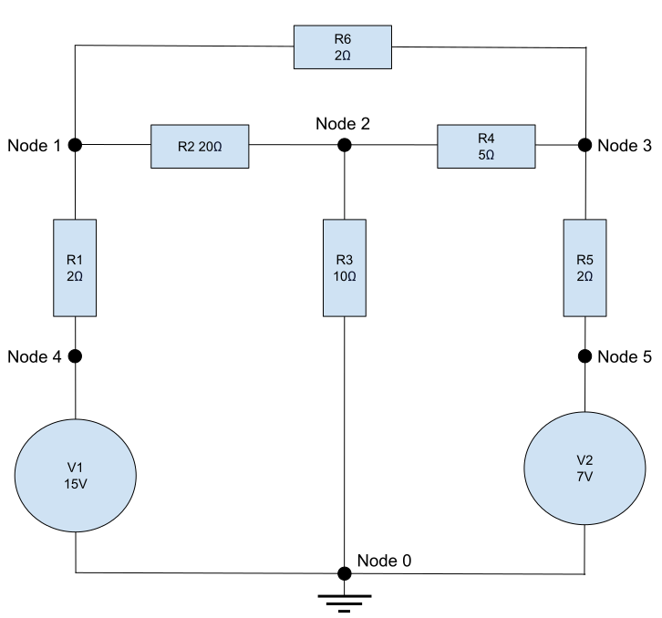

Overview
Nodal Analysis using chat-bison-001 and gpt-3.5-turbo
Exampled used: Nodal Analysis (Wikiversity)
Describing the circuit for the models
Convert to Matrixes and Results
chat-bison-001 and gpt-3.5-turbo both mix and match some values leading neither to end up matching the reference page results.